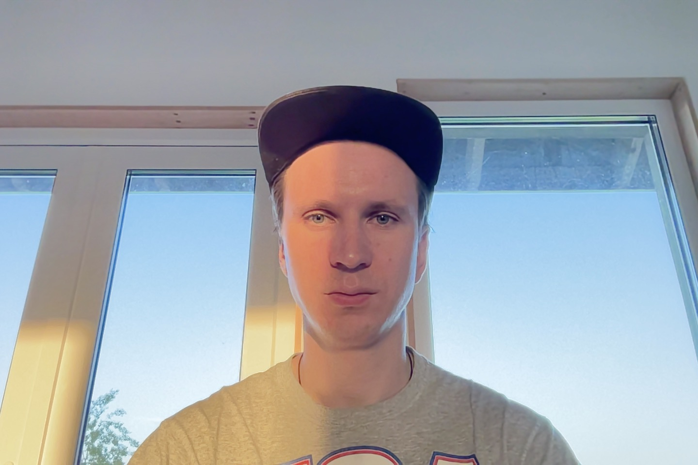

About me
I was born 21 of June 1991. I am married and I have two childrens. My strengths are learnability, perseverance, sociability, composure, ability to act in difficult situations. I have more than 3 years expirience in people management. My main task now to be a programmer, and i will do all to become it.
Conatact information
- Mobile: +375-29-133-71-53
- Telegram, Viber, WhatsApp: +375-29-133-71-53
- E-mail: alexander.tukach@gmail.com
- GitHub: alexander_tukach
- Discord: Alex (@alexander_tukach)
My programming skills
I know Pascal. Below code example. I have read book about programming basics by Andrey Victorovich Stolyarov.
Code example
program TestProc;
type
intnumber = ^number;
number = record
first: integer;
second: intnumber;
end;
var
count, one: intnumber;
i: integer;
begin
one:= nil;
while not eof do
readln(i);
new(count);
count^.first := i;
count^.second := one;
writeln(count^.first)
end.
Education
I have ended Gomel Engineering Institute Ministry of Emergency Situations in 2012. I have self-study in basics of programming by reading books and solving tasks in Pascal.
Level of English
My English level is A2 Pre-Intermideat, but I learn English to raise my level.
My Progects
My progect is this CV